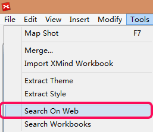
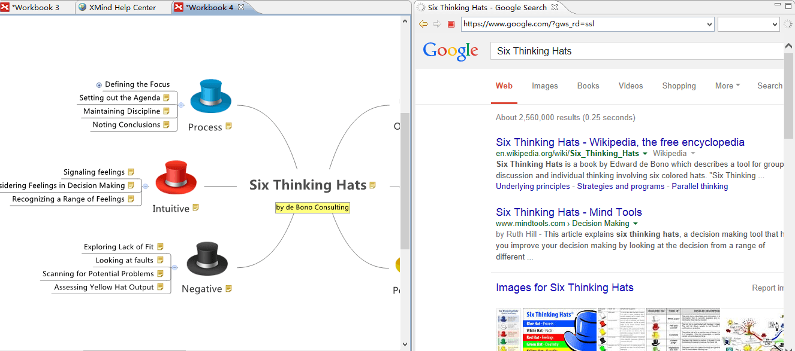
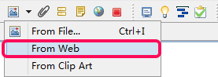
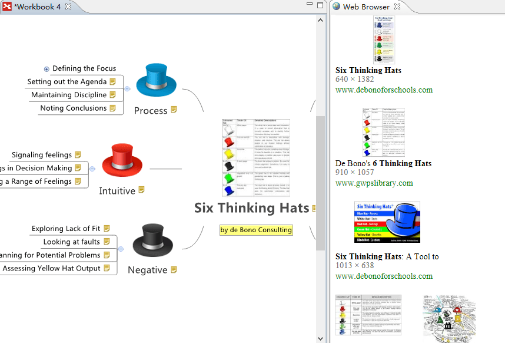
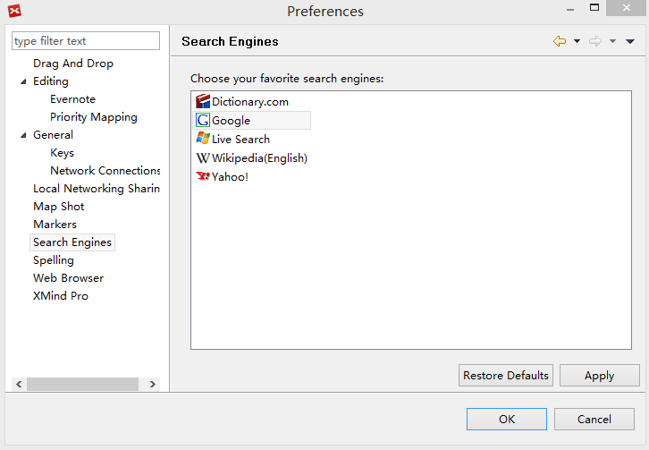

ウェブで検索
XMind は、テキストと画像を検索し、XMind にインポートできる、オンライン検索機能を統合しています。
オンラインのテキストを検索:- 1 つ以上のトピックを選択します。
- メニューの[ツール]→[ウェブで検索]を選択します。
- Webブラウザービューに、検索エンジンの画面が表示されます。
- 検索結果のテキストや URL を選択して、マップにドラッグして追加することができます。


- トピックを選択します。
- ツールバーの画像アイコンをクリックし、ドロップダウンメニューから[ウェブから]を選択します。 
- Web ブラウザービューの画像を選択し、マップへドラッグ&ドロップします。
- 画像はすでにあるトピックにドロップすることもできますし、マップの空白部分にドロップしてフローティングトピックにすることもできます。

注:
- トピックの内容はテキストと画像の検索キーワードとして使用されます。
- 検索エンジンを好きなものに変更できます。
- メニューの[編集]→[設定]を選択します。
- [検索エンジン]を選択します。
- 好きな検索エンジンを選択します。
